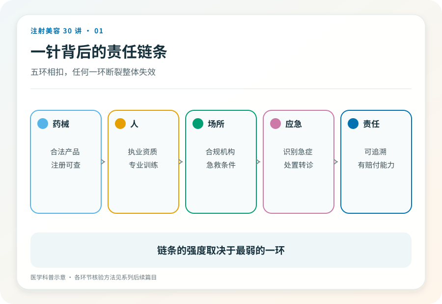

消费者认知起点
“姐妹推荐的工作室，环境跟咖啡馆一样，打完水光还能喝下午茶。”这类描述里的每一个细节都在传递同一个信息，这只是一次轻松的消费。
但在中国的法律框架里，往皮肤下注射药品或医疗器械属于医疗美容，是医疗行为。这个定性不是文字游戏，它决定了你有权得到什么、出事时能找谁。

01消费叙事在掩盖什么
医疗行为自带四样东西，适应证判断（你适不适合做）、知情同意（风险有没有讲清）、急救预案（出事了怎么办）、责任主体（找谁负责）。
消费场景恰好省掉的就是这四样。套餐、囤货、闺蜜价、限时折扣，这些话术把一次需要医生判断的医疗决策，包装成一次拼手速的购物。一个场景越努力让你觉得“这只是消费”，越说明它在回避医疗行为对应的成本与责任。

02一针背后的责任链条
一次可以被信任的注射，需要五个环节同时成立，合法的药品或器械、有资质的操作者、有资质的场所、出事时的应急能力、事后可追溯的责任主体。
本系列把它称为责任链条。链条的特点是，任何一环断裂，整体就失效。产品是真的，但打针的人没有执业资格，链条断了。医生是真的，但场所没有急救条件，链条也断了。
后面的文章会逐环拆解这条链，怎么核验产品（第 03、23 篇）、怎么核验人和机构（第 05 篇）、为什么场所本身就是安全的一部分（第 22 篇）。
03为什么“熟人”不能替代链条
美容院熟人推荐“内部渠道”是最常见的入口。熟人关系提供的是情感信任，责任链条提供的是制度保障，两者不能互相替代。
熟人不会故意害你，但她既不能替你判断适应证，也不能在血管栓塞发生的那几分钟里救你，更不能在出事后成为有赔付能力的责任主体。信任一个人，和信任一套系统，是两回事。
04已经打过了怎么办
如果你已经在非医疗场所注射过，且出现了红肿、疼痛、硬结等不适，应尽快到正规医疗机构就诊，如实告知注射时间、部位与来源。医生需要这些信息判断风险，不会也不应成为指责你的理由。
同时保留付款记录、聊天记录和一切凭证。目前没有不适的，也建议把注射信息记录下来，它从注射那天起就是你病史的一部分。
05证据边界
医疗美容的法律边界以监管部门当前规定为准，具体机构与人员资质要求可能随政策调整。本文给出的是定性框架，不构成对任何具体场所或项目的判断。
06延伸阅读
你付的钱里，最贵的部分应该是出事时有人负责。如果价格里看不到这一项，它就真的不在。
内容边界本文用于公众教育，不构成个体诊疗建议；具体适应证、风险与处置请由合格医生面诊判断。